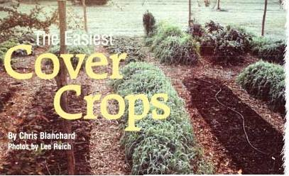
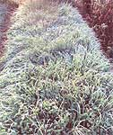
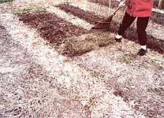

Mother Nature doesn't like her soil to be naked, so neither should you. For richer garden soil next season, keep it covered this winter with easy-to-manage, fast-growing cover crops of oats or barley.
When planted early enough to put on good growth before cold weather sets in, cover crops prevent erosion, protect soil microbes, outcompete cool-season weeds and build soil fertility. The easiest covers grow quickly during cool fall clays and are killed by winter temperatures, leaving a mulch to protect the soil. The vegetation's roots will decompose and improve the soil structure. When it's time for spring planting, all you need to do is rake back the mulch and you're ready to go.
Inexpensive and easy to grow, oats are a standard fall cover crop in the northern and middle sections of North America. I have seen oats survive well into January in my northern-Iowa market garden. A quick-growing, non-spreading grass, oats will reliably die in Hardiness Zone 6 and colder. Fall-sown barley grows even faster than oats, but it won't grow as late into the winter. It usually will die in Zone 7 and colder regions, making barley a better choice for gardeners in portions of the southern United states or in the MidAtlantic states, where oats are likely to survive the winter.
In southernmost regions, your garden's rest period probably will coincide with the intense midsummer heat instead of winter. To reap the benefits of cover crops during this period, try buckwheat, a hot-weather plant that grows quickly and attracts beneficial insects. Just be sure to turn tinder the succulent green growth before the buckwheat goes to seed. Southerners can grow oats or barley in vacant beds during the winter, but you'll have to turn them under to kill them.
Cover crop seeds probably will be easier to find (and cheaper) at your local feed store, rather than at garden centers. Buying locally means you're likely to find a regionally adapted variety. since that's what area farmers will be planting. It's best to buy seed-grade grains, rather than just feed-grade; feed-grade seeds may contain weed seeds in addition to the desired crop.
If you have time, prepare the soil as you would for garden crops. If you're in a hurry, just rake the soil to loosen the surface and broadcast seeds onto the soil as soon as the weather begins to cool down in the fall. Here on the lowa-Minnesota border we do this from Sept. 1 to mid-October.
To sow the seeds, take a handful of seeds from the bag and fling them in front of your body in a fanning motion, letting the seeds roll clown your fingers. Aim for about two seeds per square inch-but don't worry if you don't hit that precise goal. Planting a cover crop isn't an exact science, and scattering fewer or more seeds won't hurt a thing.
If you have difficulty getting even coverage, try seeding half the crop walking in one direction, and then seed perpendicularly across your original path. If you have late-season crops like Brussels sprouts or kale, just scatter seeds under the plants' leaves, and the cover crop will come along as the other crops are harvested.
After seeding, rake the seeds with a garden or landscaping rake. Try to bury most of the seeds one-half to 1 inch below the soil surface, but don't worry if some seeds are lying on top of the ground. Then irrigate with a hose or sprinkler to provide a final covering and keep the ground moist until germination. Or you can wait for rain, which is what most farmers do.
By spring, a winterkilled cover crop may be almost gone, or a great deal of residue might remain. Your springtime strategy depends on how much residue is left, and what you plan to grow in that spot. Remove or work in cover crop residues early where you want to plant crops that go in first, such as peas, or crops that benefit from warm soils, such as tomatoes.
Feed soil life. Think of cover crops as little solar-energy factories using sunlight to transform water and carbon dioxide into leaves and roots, which release carbohydrates and other compounds to sustain the soil microbes, earthworms and other fauna that make soil fertile. Nutrients constantly cycle through plants and back into the soil; cover crops keep this cycle going when you aren't growing other crops.
Protect soil life. Without plant cover or mulch for protection, beneficial soil microbes can be killed by ultraviolet radiation and extreme temperature swings.
Prevent erosion. Bare soil also is vulnerable to erosion. Even on relatively flat ground, winter rains still can wash away topsoil.
Prevent weeds. Fast-growing fall cover crops out compete late-season weeds like quack grass and chickweed.
Restore beauty. Lush, green cover crops are prettier than bare, empty garden beds.
|
 Lee Reich Cold-hardy oats protect several beds in this frosty December garden. |
 Lee Reich Nitrogen-fixing field peas have been interplanted with these oats. |
 Lee Reich In spring, rake off and compost the carpet of dead oats so the soil beneath can warm up |